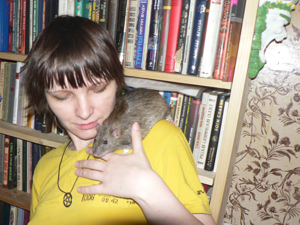
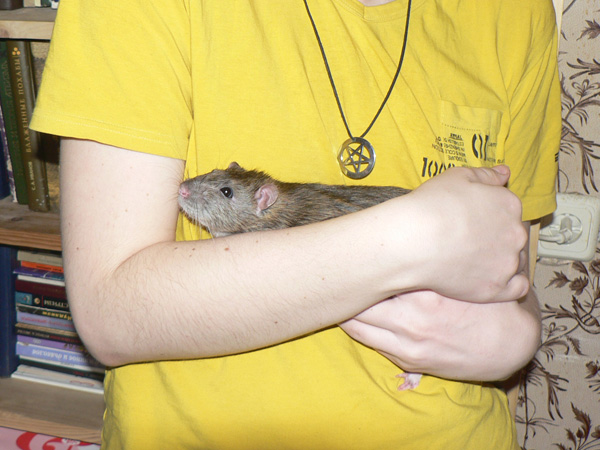
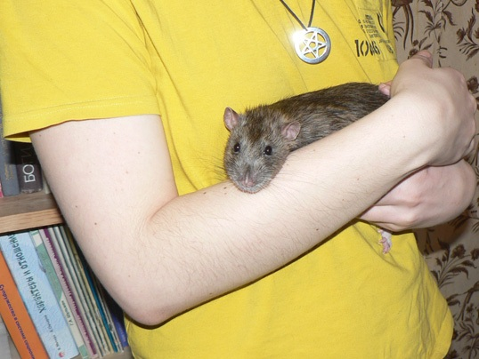
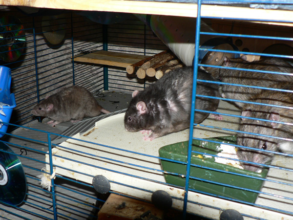
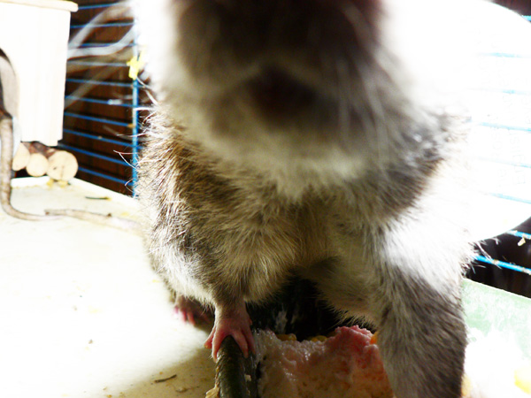
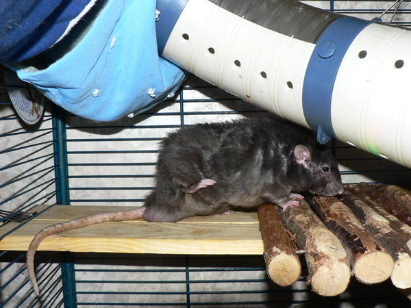
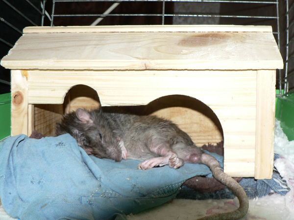
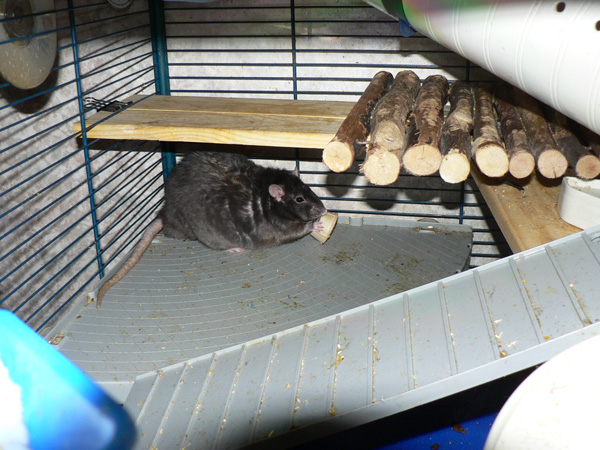
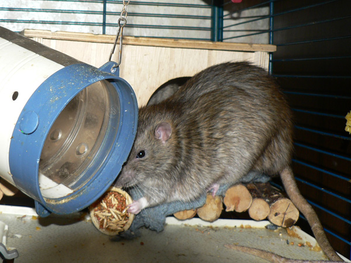

Март 2011

Кеша с Терабайтом заседают на подвесной полочке. По мере роста последнего их становится все тяжелее отличать друг от друга.

Терабайт изображает эполет и обозревает кухню.

Что там внизу?

А наверху?

А впереди? О, опять эта чертова вспышка?

Кажется, приближается ужин...

Чуем!

Ага, так точно...

Все расхватали куски и разбежались по углам, и только Терабайт остается "за столом"... Или Иннокентий? Ну честно — они теперь оба большие и пасюкастые.

«Интересно, а фотоаппарат съедобен?»

Вот это — точно съедобно.

Сеня демонстрирует брюшко.

Дон Рэба спит в своей пенсионной клетке.

...И видит сладкие сны.

Сеня, вид сверху. Процесс переныкивания лакомства.

...А можно и не ныкать. Можно просто съесть.

Так надежнее. А то ходят тут всякие по клетке…

Ибо тут народ такой, везде нычку найдут и разорят, соглашается Иннокентий.